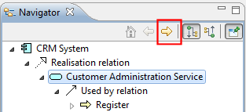
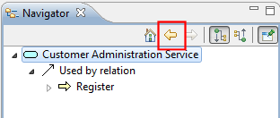
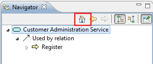
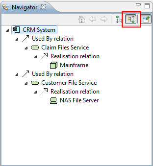
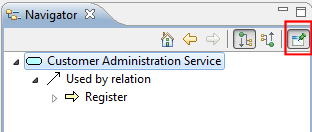

The Navigator Window
The Navigator window displays the currently selected model element and all of its relationships with other elements. It is used to display and allow navigation between connected elements via their relationships and is used in conjunction with the Model Tree window and Views.
The Model Tree acts as a "flat" repository for all the elements, relationships and Views in a model. Views are graphical configurations of those elements. However, the Navigator is able to show all of an element's relationships at the model level regardless of how they are presented in a View.
To use the Navigator window, select any element or relationship in the Model Tree or in a View. The Navigator tree will update to reflect the current selection. The tree shows the "root" selected element and any relationships that stem from it and any "target" elements from those relationships:
The Navigator Window
In the above screenshot the user has selected the element "CRM System". There are three Realisation relationships between the selected element and the three elements "Customer Administration Service", "Insurance Application Service", and "CIS". From these three elements further relationships are shown between them and their target elements.
It is possible, therefore, to "dig in" to the Navigator tree and traverse from element to element following it and its child relationships from source to target.
A selected sub-element can become the "root" element by either double-clicking on it in the tree or by clicking on the "Go Into" button on the window's toolbar:

The "Go Into" Button
Conversely, pressing the "Back" button takes you back to the previously selected element:

The "Back" button
The "Home" button takes you back to the main root element that was originally selected:

The "Home" button
By default, the Navigator shows relationships that flow from the source to the target element. It is possible to reverse this to show the element's relations that flow from the target to the source by clicking on the "Show source relations" button on the window's toolbar:

Show source relations mode
In the above screenshot the element "CRM System" is the target of the two "Used By" relationships. So the flow is from "Mainframe" to "Claim Files Service" to "CRM System", and from "NAS File Server" to "Customer File Service" to "CRM System".
The selected element can be "pinned" if required by selecting the pin button in the Navigator window:
The "pin" button
It is also possible to drag and drop any selected elements and/or relationships from the Navigator Tree to a View, in exactly the same way as dragging from the Model Tree to a View (see Adding Elements and Relations from the Model Tree to a View)
 To see a screen-cast demonstration of the Navigator go to this web-site: http://archi.cetis.ac.uk/movies/navigator/navigator.html
To see a screen-cast demonstration of the Navigator go to this web-site: http://archi.cetis.ac.uk/movies/navigator/navigator.html